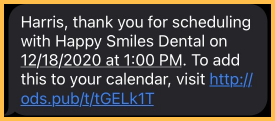

eServices Bundle Workflow
See eServices Setup.
When using the eServices Bundle, users have access to a variety of eService features. The goal of the eService Bundle is to increase productivity and efficiency in the office.
Below, we outline the recommended workflow for Bundle users. (The workflow for each office may vary). This workflow is designed to get patients scheduled, help patients keep their appointments, and automate the check-in process.
Scheduling the Appointment
When using the eService Bundle, there are five options to help schedule patients:
- New Patients can schedule their appointment online via Web Sched New Patient.
- Existing Patients can schedule their appointment online via Web Sched Existing Patient.
- Patients on the ASAP List can be sent a link via Web Sched ASAP when an appointment opens.
- Patients due for a recall appointment can be sent a link to schedule their appointment via Web Sched Recall.
- If a patient calls while the staff is working from home, or an emergency call after hours, appointments can be scheduled using ODMobile.
Prior to the Appointment
Once a patient schedules their appointment, it is important to keep in touch, so the patient keeps their appointment. Many of the following messages and time frames can be customized.
- Using Automated Thank-You messages, the patient will be sent a thank you message for scheduling an appointment. This message is typically sent a couple hours after the appointment has been scheduled.
- The patient can save the appointment to the calendar on their device as a reminder.

- The patient can save the appointment to the calendar on their device as a reminder.
- A few days prior to the appointment (e.g. 3 days), the patient is automatically sent an eConfirmation via text or email.
- The patient will reply to the message to confirm the appointment.

- Once the patient patient replies, the appointment status will automatically change to Confirmed.

- The patient will reply to the message to confirm the appointment.
- One day before (or the day of) the appointment, the patient is automatically sent an eReminder via text or email.

Day of the Appointment
Workflow on the day of the appointment varies for many offices. Below is an example of when a patient is unable to wait in the building (e.g. COVID restrictions).
- A few hours before the appointment, an Arrival message is sent via text message asking the patient to wait in their car when they arrive.
- When the patient arrives, they text 'A' to the office indicating they have arrived.

- This changes the appointment status to Arrived.

- When the patient arrives, they text 'A' to the office indicating they have arrived.
- With BYOD (Bring Your Own Device) the patient will be sent a link to download and open eClipboard.
- The link will open the following page:

- If the patient has already downloaded eClipboard, they will click Check-In.
- If the patient has not already downloaded eClipboard, they will click the link to Google Play (Android users) or the App Store (iOS users). Then users should return to this page to click Check-In.
- The link will open the following page:
- eClipboard will open for the patient. They can then fill forms as needed. See BYOD: What Patient Sees.
- When the office is ready to see the patient, they will send a Come In text message.

- The patient can then come into the office to proceed with their appointment.
Other eServices
There are other eServices included in the Bundle not mentioned above. These services can help customize the workflow for your office. For example:
- Web Forms can be added to your site for patients to fill out prior to their appointment.
- Patient Portal is great for patients who want to view upcoming appointments, review statements, view their treatment plan, securely message the doctor, or want to make a payment. This is a great tool that you can enable for a patient after their appointment.
- In addition to scheduling appointments, ODMobile allows office staff to view their schedule, patient information, and pharmacy information, from the comfort of their home. This app is a great tool for those after-hours emergency calls.
- If your patients are able to wait in the office, you may consider installing eClipboard to a tablet device for the patient to check-in and fill out forms.